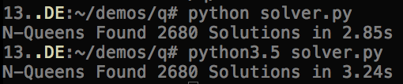
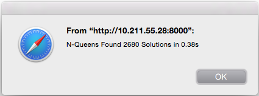
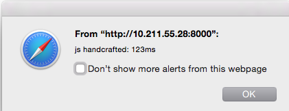
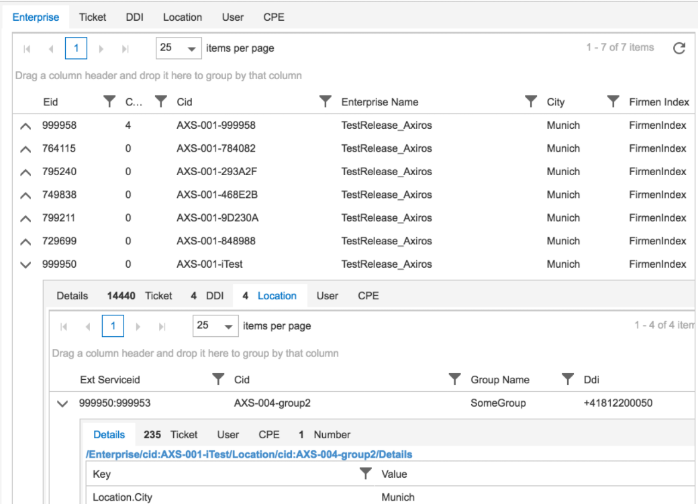
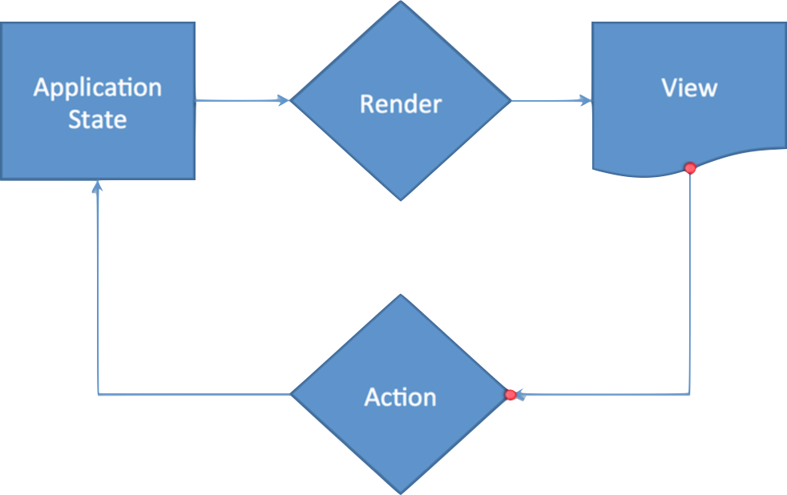
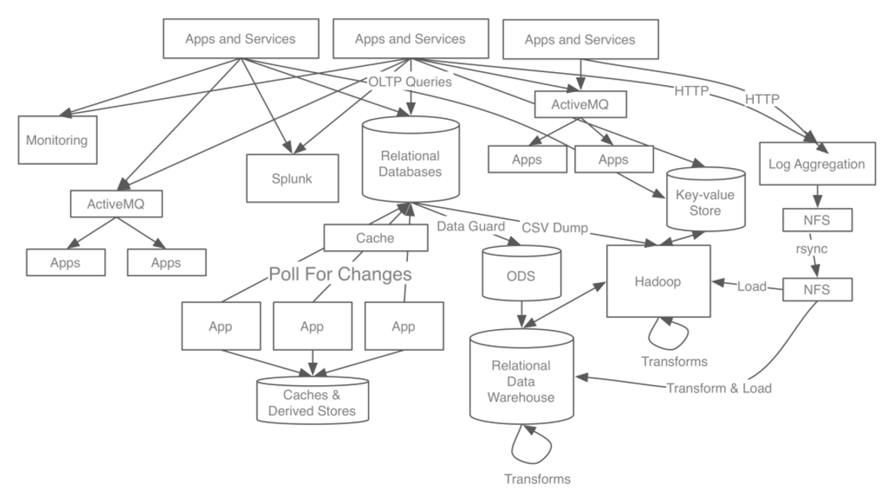
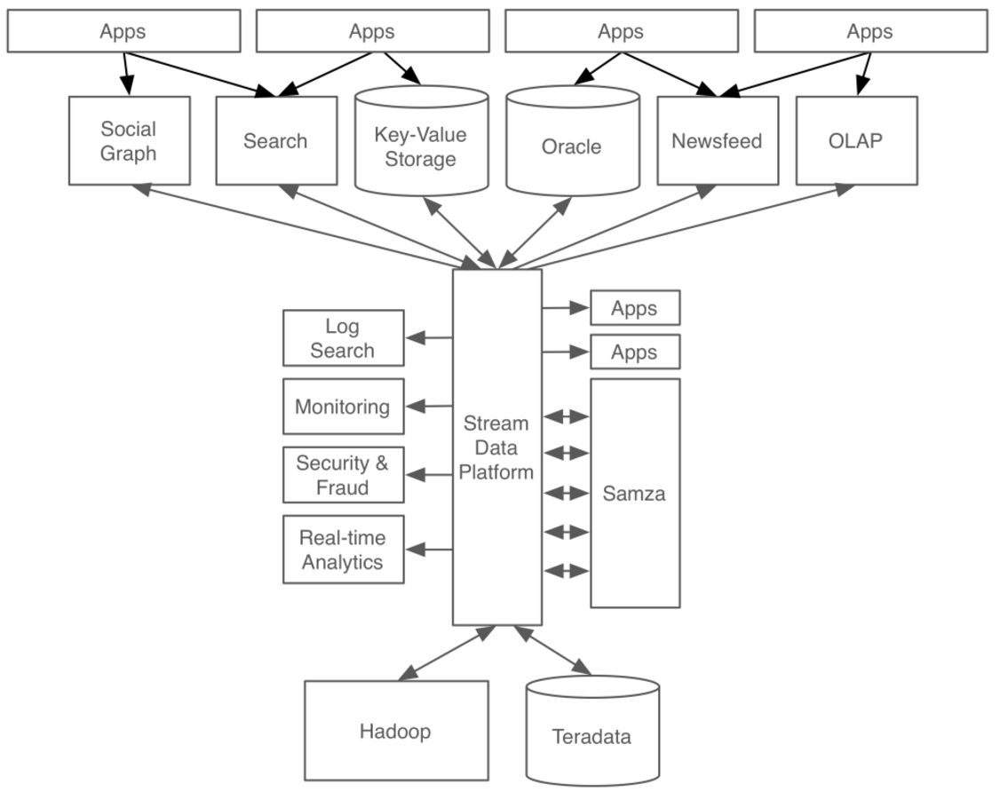

Transcrypt / Redux / FRP
Reactive Isomorphic Web Components
In Python Only
PyMunich, 2016-10-30
- Esc: Overview - s: Present - STRG-` + STRG-[1-9] to sketch, STRG-[-=] width
Meta
@Speaker
- Gunther.Klessinger@axiros.com or here
- Disclaimers: 30 years of programming, 15 in Python but:
- No computer scientist (just a theor. physicist, plagued by constantly trying to falsify common assertions)
- No js guru, not the author of Transcrypt, just a happy convert from Riot(1).
- Heading Innovation at a small to medium (80 people worldwide) Python shop, founded by myself in 2002
- Current field of work: Mainly
- We do 85% Python, Rest C and, well, Javascript for the frontends
- Prof. service intense products for around 200 telecommunication operators
- Which expect min. 5 years of support(...)
1 RiotJS: Components, vDom, One Way Binding. Opinion: RiotJS/ReactJS = Python/Java
Purpose of Talk
Promote Transcrypt.
This talk is primarily to advocate Web Development for
- serious / commercial / large scale
- supportable
- multi membered
- state of the art projects,
- based on most modern javascript designs and libs,
while thinking and writing Python for backend and frontend.
Transcrypt is ready for that and deserves far more attention!
Part I: Transcrypt
Lean, Fast, Open Python to Javascript Transpiler
God Is In The Details: There are quite some alternatives, some way larger and ambitious - but Transcrypt's design choices might convince you immediately:
- Fast server sided transpilation based on
- A transparent AST walker
- Into lean readable Javascript
Key Features: See here.
Embrace, Not [Trying to] Replace Javascript
Claim: Transcrypt enables you to think purely Pythonic about your browser code (while actually using any javascript lib).
|

|
Is It Really?
First Showcase
Python version of the first py/js perf found, removing cmd line parsing only:
|  |  |
- C-Python simple number crunching algo, runs unmodified(!) in Browser, with
- Same results, performance nearly 10 times better
- Instant transpilation, done by CPython, no js on server needed.
Generated Javascript
Similarities purely accidental. NOT ;-)
Megabytes of Core Libs Shipped to the Client?
~/reveal/transcrypt/src/demo_1_queens/__javascript__ $ ls -lth solver*
26K Oct 30 01:00 solver.min.js
70K Oct 30 01:00 solver.jsThat is all. Any import mylib compiled into on demand.
Performance

~ Factor 3 penalty versus handcrafted js.
Deal, for all the Python expressivity / builtin wtf-avoidance available.
And direct js is always at hand, should you miss it.
Checkout -f fastpath also.
Features:
Check this
my decision after 3, 4 days of playing around...
API Stability
Imho the most important point for professional / commercial applicability:
Out of these it is the only (applicable) one where bad surprises after updates are excluded by design: This is the binding authority.⭆ An invest in writing library modules in Transcrypt is as future proof as an invest in Python modules on the server side.
Not Convinced? The Transcrypt Testsuite
These are run in CPython, then in the browser.
autoTester.check(...) asserts 100% identical results.

Still not Convinced?
There is
foo = [i for i in range(10) if i in mydict]
__pragma__('js', '{}', '''
<any native javascript code doing sth with `foo`
generating new local assignments>''')
<continuing in python>within any local namespace.
Again: Assigning in python, operation in js and vice versa:
All fluent and w/o problems.
Handy for starters but after a while you don't need it anymore, realizing that Transcrypt can do it all.
Limitations
Python: A Small Number of Performance Tradeoffs
Mainly:
[a]not working when a is negative (overloading any array op deemed too expensiv).[a:-a]working fine.def foo(**kw)kwargs off by default, too bloated. Can be enabled via CLI switch or local "pragma". Tip: pass dicts and you'll stay out of trouble.- exec, eval: Should be clear, we are not shoehorning a Python runtime into the browser...
Ecosystem
Transcrypt is about Python, the way of thinking and expressing ideas.
Transcrypt is not about Python, the ecosystem. (At last currently, author focusses 100% on supporting all the Python mechanics, not the libs).
The ecosystem at hand is here - not pip.
And this is a perfect match: Python's code structuring and derivation / multi inheritance possibilities ((local) classes, metaclasses, decorators, inline functions(...)) and its well designed effectivity in mangling datastructures combined with all the workhorses for (v)DOM manipulation, templates, events (...) of the js world.
Producing Javascript - while writing and thinking Python.
Author's Vision
He is fluent in more computer languages than some of you have years on this planet ;-)
In the first place I think it is important to highlight the overall design goal of Transcrypt, which is:
"having a Py to JS compiler that produces code that can compete with native JS code with respect to speed, compactness and interoperability with any JS library, so is seriously usable for the production of large web applications"
As a consequence of this, some features of Python are off limits, most notable "eval" and "exec", which would imply slow, bulky in-browser compilation. Also a number of dynamic mechanisms have been simplified to achieve more speed (such as the descriptor mechanism).
Meanwhile features like multiple inheritance and operator overloading were considered important enough to have them in, but in an efficient way, operator overloading e.g. being locally switchable.
Sourcemaps and highly readable JS targets facilitate easy debugging. Native JS code can be included anywhere, but rarely needs to, as things like for-loops, i++ etc. are optimized.
Secondly the design decision to favor unimpeded access to JS libs over the use of Py libs deserves some explanation
The web developers community has produced a large number of high quality libraries. For any serious web development tool, unimpeded use of these libraries is an absolute necessity.
This is not to say that porting CPython libs wouldn't be useful! Having a Python style regex / re library would be great, as would be having a relevant part of sys available. Libs like e.g. libs math , random and time are already there, as is the humble turtle module. Message: If you want to port a CPython lib to Transcrypt: this is highly welcomed. Please include an autotest for it as well.
Keep your libraries lean and fast, using underlying JS functionality as much as possible. If some features have to be left out to achieve this it's ok. Please document which features are present by including working code fragments using them in your autotest, which will at the same time be usable as documentation.
For ports of libraries that are part of the CPython distro: If an autotest with good coverage is included and it runs correctly and efficiently on Windows and Linux / OsX, inclusion in the Transcrypt distribution is likely. To make this possible your lib should be contributed under the Apache 2 license. You can name it exactly the same as its CPython counterpart, since it will be reached via a different, preferred search path.
For ports of libraries that are available on PyPi separately: Give it a unique name (not the same as the corresponding CPython lib) that somehow lays the connection between the original library and Transcrypt (like e.g. is the case with Numscrypt) and make it pip-installable from PyPi, having at least Transcrypt as a keyword to make it findable.
Part II:
Reactive Isomorphic Web Components
Components
Encapsulate Functionality, Composable

FRP
Functional Reactive Programming
|  |
|
"Dead": 2-way binding (angular), direct DOM interaction (read and write)
Stream Processing
Don't focus on singular events, start thinking in event streams: Mouse moves, input field entries (...)
Stream processing libs handle buffering of data and decoupling of state, in order to handle event streams just like normal objects, providing functions like filter, map, throttle, merge (...)
Backend: Comparable (Re)designs Everywhere
|  | ⭆ |  |
Redux
Single Source of Truth for Application State.
Application wide event stream (merged component event streams, merged with data updates from the server are "reduced" into state updates of an application wide store. Whose updates are oberserved, resulting into component (view) updates, resulting in the user creating new events [endless loop]
Isomorphic
- Why
- Key Message: "Less code, as it is shared by both the client and the server."
Transcrypt enables you to write components run on server and client:
from wax.base.redux import ReduxComponent as RC
from wax.base.render import PlainStateRenderer as PSR
class Services(RC, PSR):
# default store inits:
ico = 'faves'
limit = 10 # max records loaded. put to 10000 on prod!
page_size = 25
data = None # pointer to current data
data_id = None # kept in the store
_app = None # ref to app, managing redux store, streams and routes
def preregister(self):
'''get_data: e.g. websocket emit on the client,
direct data fetch on the server'''
self.get_data('static', 'meta_data')
def render(self):
# never invoked on server
console.log('in render of services')
# use widget library of choice to render updated data
def get_data(self, mode, type):
self._app.server_fetch(mode, type)
# -----------------------------------------------------------------------------
__pragma__ ('ifdef', 'on_server')
# -----------------------------------------------------------------------------
# imported by server App:
class Services(Services):
@classmethod
def get_data(cls, mode, type):
# direct database access Thank You!
Questions
Welcome (also via Transcrypt on GitHub) - but might see .merge(daily_work_stream) ;-)